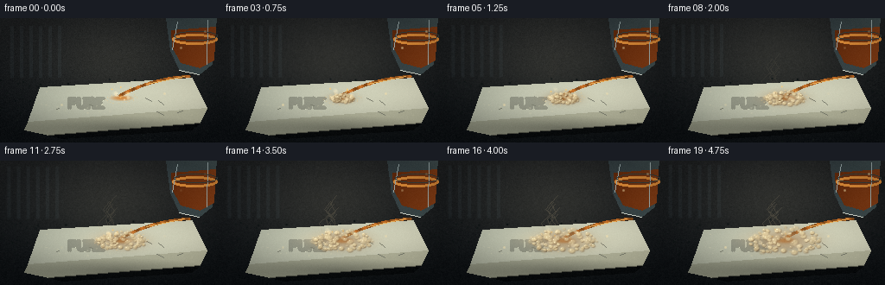
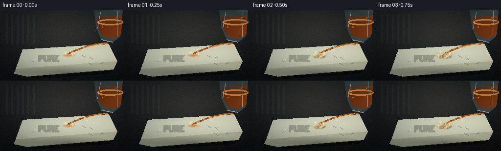

CODING AGENTS AS PIXEL WORLD MODELS
traex/DeepSeek-V4.1-Flash · material_0042
点击播放 · 原生 RGB 像素
此结果可播放，但该运行尚未通过最终提交审核。页面展示不代表评测通过。
逐轮保存的候选
回放视频、检查图与代码变化。
每份候选均可单独播放。实际图片检查记录在下方工具轨迹中。
候选 01播放与检查图
点击播放 · 原生 RGB 像素


展开代码变化
--- 上一保存版本
+++ 本次保存版本
@@ -0,0 +1,333 @@
+"""Render a macro timelapse of sulfuric acid reacting with a soap bar."""
+
+from pathlib import Path
+
+import cv2
+import numpy as np
+
+import artifact_io
+
+
+WIDTH, HEIGHT = 256, 144
+FRAMES = 20
+FPS = 4.0
+OUT = Path(__file__).resolve().parent
+
+
+def smoothstep(a, b, x):
+ t = np.clip((x - a) / (b - a), 0.0, 1.0)
+ return t * t * (3.0 - 2.0 * t)
+
+
+def canvas():
+ yy, xx = np.mgrid[:HEIGHT, :WIDTH].astype(np.float32)
+ # A warm, softly lit laboratory bench with a vignette and shallow depth.
+ t = np.clip(yy / (HEIGHT - 1), 0, 1)
+ img = np.empty((HEIGHT, WIDTH, 3), np.float32)
+ img[:] = (27, 33, 38)
+ img *= (1.0 - 0.30 * t[..., None])
+ img += np.array((10, 7, 4), np.float32) * (1.0 - t[..., None])
+
+ # Overhead illumination falls on the counter behind the soap.
+ pool = np.exp(-(((xx - 132) / 112) ** 2 + ((yy - 53) / 67) ** 2) * 1.6)
+ img += pool[..., None] * np.array((20, 19, 15), np.float32)
+ grain = np.random.default_rng(7).normal(0, 2.2, (HEIGHT, WIDTH, 1))
+ img += grain
+
+ # Sparse tabletop flecks help establish scale.
+ rng = np.random.default_rng(11)
+ for _ in range(90):
+ x, y = int(rng.integers(0, WIDTH)), int(rng.integers(70, HEIGHT))
+ c = np.array((24, 30, 31), np.float32) + rng.uniform(-5, 7)
+ img[max(0, y - 1):y + 1, max(0, x - 1):x + 1] = c
+
+ # Faint reflected window, mostly hidden by the subject.
+ for x in range(12, 72, 11):
+ img[9:69, x:x + 4] += np.array((6, 8, 9), np.float32)
+ return img
+
+
+def add_ellipse(img, center, radii, color, alpha=1.0, angle=0.0, soft=1.0):
+ cx, cy = center
+ rx, ry = radii
+ yy, xx = np.mgrid[:HEIGHT, :WIDTH].astype(np.float32)
+ ca, sa = np.cos(angle), np.sin(angle)
+ dx, dy = xx - cx, yy - cy
+ u = (dx * ca + dy * sa) / rx
+ v = (-dx * sa + dy * ca) / ry
+ d = np.sqrt(u * u + v * v)
+ mask = np.clip((1.0 - d) * soft, 0.0, 1.0) * alpha
+ img[:] = img * (1.0 - mask[..., None]) + np.asarray(color, np.float32) * mask[..., None]
+ return d
+
+
+def add_soap(img, time):
+ # White soap bar in perspective: a broad top face, a cream front, and a
+ # narrow shaded edge. The right half is deliberately brighter.
+ top = np.array([(46, 80), (222, 69), (239, 104), (32, 120)], np.float32)
+ mask = np.zeros((HEIGHT, WIDTH), np.uint8)
+ cv2.fillPoly(mask, [top.astype(np.int32)], 255)
+ y0, y1 = 70, 120
+ yy, xx = np.mgrid[:HEIGHT, :WIDTH].astype(np.float32)
+ grad = np.clip((xx - 32) / 207, 0, 1)
+ top_col = np.stack(
+ (
+ 174 + 41 * grad,
+ 184 + 38 * grad,
+ 170 + 32 * grad,
+ ),
+ axis=-1,
+ ).astype(np.float32)
+ top_col *= (0.93 + 0.07 * np.cos((yy - 90) / 18)).astype(np.float32)[..., None]
+ m = mask.astype(bool)
+ img[m] = top_col[m]
+
+ # Slightly bowed leading face and the darker underside.
+ front = np.array([(32, 120), (239, 104), (231, 121), (56, 135), (28, 129)], np.float32)
+ fmask = np.zeros((HEIGHT, WIDTH), np.uint8)
+ cv2.fillPoly(fmask, [front.astype(np.int32)], 255)
+ fm = fmask.astype(bool)
+ fgrad = np.clip((xx - 28) / 210, 0, 1)
+ fcol = np.stack((142 + 45 * fgrad, 149 + 44 * fgrad, 134 + 37 * fgrad), -1)
+ img[fm] = fcol[fm]
+ edge = np.array([(56, 135), (231, 121), (222, 129), (71, 139)], np.float32)
+ emask = np.zeros((HEIGHT, WIDTH), np.uint8)
+ cv2.fillPoly(emask, [edge.astype(np.int32)], 255)
+ em = emask.astype(bool)
+ img[em] *= 0.62
+
+ # Stamped, embossed word on the top surface.
+ stamp_mask = np.zeros((HEIGHT, WIDTH), np.uint8)
+ cv2.putText(stamp_mask, "PURE", (78, 103), cv2.FONT_HERSHEY_SIMPLEX, 0.50, 255, 2, cv2.LINE_AA)
+ sm = stamp_mask.astype(bool)
+ img[sm] *= 0.78
+ shadow = np.zeros((HEIGHT, WIDTH), np.uint8)
+ cv2.putText(shadow, "PURE", (79, 104), cv2.FONT_HERSHEY_SIMPLEX, 0.50, 255, 1, cv2.LINE_AA)
+ sm2 = shadow.astype(bool) & ~sm
+ img[sm2] += np.array((34, 35, 30), np.float32)
+
+ # A few fine cracks and bubbles in the soap to give it physical texture.
+ rng = np.random.default_rng(19)
+ for _ in range(24):
+ x, y = rng.uniform(45, 225), rng.uniform(82, 112)
+ r = rng.uniform(0.7, 2.0)
+ add_ellipse(img, (x, y), (r, r * 0.52), (203, 207, 184), 0.38, rng.uniform(-0.4, 0.4), 2.0)
+ for _ in range(7):
+ x, y = rng.uniform(55, 215), rng.uniform(86, 112)
+ pts = np.array([(x, y), (x + rng.uniform(-9, 9), y + rng.uniform(1, 5))], np.int32)
+ cv2.polylines(img, [pts], False, (127, 133, 121), 1, cv2.LINE_AA)
+
+ # Soft contact shadow anchors the bar to the counter.
+ add_ellipse(img, (137, 127), (113, 15), (22, 25, 25), 0.45, 0.0, 0.8)
+ return top
+
+
+def draw_beaker(img, time):
+ # The pour vessel enters from the upper right. Its open lip and amber acid
+ # are visible, so the action reads immediately even without a person.
+ glass = np.array(
+ [(192, -8), (250, -5), (245, 53), (230, 65), (207, 59), (197, 37)],
+ np.float32,
+ )
+ gm = np.zeros((HEIGHT, WIDTH), np.uint8)
+ cv2.fillPoly(gm, [glass.astype(np.int32)], 255)
+ gm = gm.astype(bool)
+ yy, xx = np.mgrid[:HEIGHT, :WIDTH].astype(np.float32)
+ glass_col = np.stack(
+ (66 + 18 * (xx - 195) / 55, 83 + 22 * (xx - 195) / 55, 89 + 19 * (xx - 195) / 55), -1
+ )
+ img[gm] = img[gm] * 0.30 + glass_col[gm] * 0.70
+
+ # Dark amber liquid, with a meniscus that catches the key light.
+ liquid = np.array([(198, 14), (249, 10), (247, 48), (231, 57), (209, 51), (199, 33)], np.float32)
+ lm = np.zeros((HEIGHT, WIDTH), np.uint8)
+ cv2.fillPoly(lm, [liquid.astype(np.int32)], 255)
+ lmb = lm.astype(bool)
+ lg = np.clip((xx - 197) / 52, 0, 1)
+ lcol = np.stack((103 + 34 * lg, 50 + 20 * lg, 20 + 10 * lg), -1)
+ img[lmb] = lcol[lmb]
+ men = np.zeros((HEIGHT, WIDTH), np.uint8)
+ cv2.ellipse(men, (225, 24), (25, 5), 0, 0, 360, 255, 1, cv2.LINE_AA)
+ men = men.astype(bool)
+ img[men] = np.array((227, 151, 67), np.float32)
+
+ # Glass highlights and the dark rim.
+ cv2.line(img, (205, 4), (199, 36), (164, 186, 190), 1, cv2.LINE_AA)
+ cv2.line(img, (240, 2), (239, 53), (167, 189, 193), 1, cv2.LINE_AA)
+ cv2.line(img, (207, 60), (230, 65), (211, 224, 218), 1, cv2.LINE_AA)
+ cv2.ellipse(img, (226, 20), (25, 5), 0, 0, 360, (61, 72, 72), 1, cv2.LINE_AA)
+ return np.array((219, 67), np.float32)
+
+
+def bezier(p0, p1, p2, n=100):
+ t = np.linspace(0, 1, n)[:, None]
+ return (1 - t) ** 2 * p0 + 2 * (1 - t) * t * p1 + t**2 * p2
+
+
+def draw_stream(img, time, start):
+ # The stream bends under gravity and lands in the reaction crater. Its
+ # thickness breathes slightly to imply pouring rather than a static line.
+ end = np.array((138 + 1.5 * np.sin(time * 2.1), 89), np.float32)
+ curve = bezier(start, (180, 68), end, 120)
+ width = 3.0 + 0.55 * np.sin(time * 7.0)
+ for i in range(len(curve) - 1):
+ p, q = curve[i], curve[i + 1]
+ shade = 0.82 + 0.18 * np.sin(i * 0.37 + time * 4)
+ c = np.array((195, 117, 47), np.float32) * shade
+ cv2.line(img, tuple(np.round(p).astype(int)), tuple(np.round(q).astype(int)), tuple(c), 2, cv2.LINE_AA)
+ # A white-hot reflected edge keeps the thin stream visible at low res.
+ cv2.line(
+ img,
+ tuple(np.round(curve[9]).astype(int)),
+ tuple(np.round(curve[75]).astype(int)),
+ (229, 180, 99),
+ 1,
+ cv2.LINE_AA,
+ )
+
+ # A little splash and an acid-wet pool at the contact point.
+ add_ellipse(img, (140, 92), (15, 4), (203, 128, 53), 0.80, 0.0, 1.4)
+ rng = np.random.default_rng(33)
+ for j in range(5):
+ phase = (time * 1.7 + j * 0.17) % 1.0
+ x = 139 + np.sin(j * 2.1 + time * 3.0) * (9 + 7 * phase)
+ y = 91 - np.sin(phase * np.pi) * (8 + j * 1.2)
+ add_ellipse(img, (x, y), (1.3, 1.3), (245, 201, 113), 0.75, 0.0, 2.0)
+
+
+def draw_foam(img, time):
+ """Build a bright, churning crust of bubbles around the acid contact."""
+ yy, xx = np.mgrid[:HEIGHT, :WIDTH].astype(np.float32)
+ contact_x, contact_y = 140.0, 92.0
+ spread = 4.0 + 18.0 * smoothstep(0.05, 0.92, time)
+ mask = np.exp(-(((xx - contact_x) / (spread + 6)) ** 2 + ((yy - contact_y) / (spread * 0.62 + 4)) ** 2) * 1.1)
+ mask *= smoothstep(0.02, 0.22, time)
+
+ # Mottled cream and pale ochre bubbles. The largest reaction is around the
+ # impact point and a secondary front creeps toward the left.
+ rng = np.random.default_rng(53)
+ bubbles = []
+ for _ in range(95):
+ ang = rng.uniform(0, np.pi * 2)
+ rad = np.sqrt(rng.uniform(0, 1))
+ bx = contact_x + np.cos(ang) * rad * (8 + 37 * time)
+ by = contact_y + np.sin(ang) * rad * (3 + 13 * time)
+ br = rng.uniform(1.2, 4.0) * (0.75 + 0.45 * time)
+ bubbles.append((bx, by, br, rng.uniform(0.4, 1.0)))
+
+ # Add a darker acid-etched region before the bubbles so foam has depth.
+ acid = np.exp(-(((xx - contact_x) / (13 + 22 * time)) ** 2 + ((yy - contact_y) / (5 + 8 * time)) ** 2) * 1.2)
+ acid *= smoothstep(0.0, 0.30, time)
+ img[:] = img * (1 - 0.58 * acid[..., None]) + np.array((124, 81, 42), np.float32) * 0.58 * acid[..., None]
+
+ # Layered bubble bodies: warm shadow, creamy fill, tiny white rim.
+ for bx, by, br, alpha in bubbles:
+ if mask[min(HEIGHT - 1, int(np.clip(by, 0, HEIGHT - 1))), min(WIDTH - 1, int(np.clip(bx, 0, WIDTH - 1)))] < 0.08:
+ continue
+ add_ellipse(img, (bx + 0.7, by + 0.8), (br * 1.1, br * 0.85), (103, 77, 47), 0.50 * alpha, 0.0, 2.0)
+ add_ellipse(img, (bx, by), (br, br * 0.78), (223, 213, 172), 0.85 * alpha, 0.0, 2.0)
+ add_ellipse(img, (bx - br * 0.28, by - br * 0.25), (br * 0.25, br * 0.20), (255, 249, 217), 0.9 * alpha, 0.0, 2.0)
+
+ # A few bubble highlights pop over successive frames.
+ for j in range(7):
+ phase = (time * 1.6 + j * 0.13) % 1.0
+ bx = contact_x + np.sin(j * 1.7 + 0.4) * (9 + 22 * time)
+ by = contact_y + np.cos(j * 1.2) * (2 + 8 * time) - phase * 9
+ r = 1.4 + 1.8 * np.sin(phase * np.pi)
+ add_ellipse(img, (bx, by), (r, r), (255, 247, 211), 0.48 * (1 - phase), 0.0, 2.5)
+
+ # Expanding foam ridge over the top face.
+ ridge = np.zeros((HEIGHT, WIDTH), np.float32)
+ for k in range(6):
+ rx = 17 + k * 6.5 * smoothstep(0.05, 0.9, time)
+ ry = 4.0 + k * 1.2
+ ridge += np.exp(-(((xx - contact_x + 1.8 * k) / rx) ** 2 + ((yy - (94 - k * 1.0)) / ry) ** 2) * 1.8)
+ ridge = np.clip(ridge, 0, 1) * smoothstep(0.18, 0.72, time)
+ img[:] = img * (1 - 0.18 * ridge[..., None]) + np.array((244, 235, 196), np.float32) * 0.18 * ridge[..., None]
+
+ # Fine bubbles in the wet ring, with irregular specular glints.
+ for j in range(20):
+ ang = j * 2.399 + 0.5
+ rad = 16 + 22 * time + 3 * np.sin(j * 1.4)
+ x = contact_x + np.cos(ang) * rad
+ y = contact_y + np.sin(ang) * rad * 0.38
+ if y < 116:
+ add_ellipse(img, (x, y), (1.0, 0.8), (222, 198, 145), 0.45, 0.0, 2.0)
+
+
+def draw_vapor(img, time):
+ """Add thin, slowly rising wisps; they stay subordinate to the reaction."""
+ rng = np.random.default_rng(71)
+ overlay = img.copy()
+ for j in range(9):
+ bx = 126 + rng.normal(0, 9)
+ by = 82 - rng.uniform(0, 25)
+ drift = np.sin(time * 1.8 + j) * 5
+ pts = np.array(
+ [
+ (bx + drift, by),
+ (bx - 5 + drift * 0.5, by - 9),
+ (bx + 3 + drift * 0.2, by - 18),
+ ],
+ np.int32,
+ )
+ cv2.polylines(overlay, [pts], False, (175, 164, 133), 1, cv2.LINE_AA)
+ alpha = 0.18 * smoothstep(0.12, 0.85, time)
+ img[:] = img * (1 - alpha) + overlay * alpha
+
+
+def draw_sparkles(img, time):
+ # Tiny highlights on the glass lip and soap edge make the macro setup feel
+ # illuminated rather than flat.
+ for x, y, phase in [(237, 15, 0.0), (209, 34, 0.4), (190, 87, 0.7), (71, 100, 0.2)]:
+ a = 0.35 + 0.25 * np.sin(time * 8 + phase)
+ add_ellipse(img, (x, y), (2.0, 2.0), (246, 232, 183), max(0, a), 0.0, 1.6)
+
+
+def grade(img):
+ # Gentle cinematic contrast and a restrained warm-cool grade.
+ img = np.clip(img, 0, 255)
+ img = (img - 128.0) * 1.06 + 128.0
+ img[..., 0] *= 1.035
+ img[..., 2] *= 0.975
+ img = np.clip(img, 0, 255)
+ # Vignette, strongest at the corners.
+ yy, xx = np.mgrid[:HEIGHT, :WIDTH].astype(np.float32)
+ vig = 1.0 - 0.20 * (((xx - WIDTH / 2) / (WIDTH / 2)) ** 2 + ((yy - HEIGHT / 2) / (HEIGHT / 2)) ** 2)
+ img *= np.clip(vig, 0.72, 1.0)[..., None]
+ return img
+
+
+def render_frame(frame_index):
+ time = frame_index / (FRAMES - 1)
+ img = canvas()
+ # Slight camera push toward the contact point over the shot.
+ zoom = 1.0 + 0.025 * time
+ if zoom != 1.0:
+ mat = cv2.getRotationMatrix2D((132, 88), 0.0, zoom)
+ mat[:, 2] += (132 * (1 - zoom), 88 * (1 - zoom))
+ img = cv2.warpAffine(img, mat, (WIDTH, HEIGHT), flags=cv2.INTER_LINEAR, borderMode=cv2.BORDER_REFLECT)
+ add_soap(img, time)
+ start = draw_beaker(img, time)
+ draw_stream(img, time, start)
+ draw_foam(img, time)
+ draw_vapor(img, time)
+ draw_sparkles(img, time)
+ img = grade(img)
+
+ # Very light film grain and a tiny amount of edge softening, while keeping
+ # the reaction readable at this deliberately low output resolution.
+ rng = np.random.default_rng(100 + frame_index)
+ img += rng.normal(0, 1.4, (HEIGHT, WIDTH, 1))
+ img = cv2.GaussianBlur(img, (3, 3), 0.35)
+ return np.clip(img, 0, 255).astype(np.uint8)
+
+
+def main():
+ frames = np.stack([render_frame(i) for i in range(FRAMES)])
+ artifact_io.save(frames, OUT)
+ print(f"Saved {len(frames)} frames to {OUT}")
+
+
+if __name__ == "__main__":
+ main()
可观测工具轨迹
实际执行的命令与返回图片。
命令 1exit 0
/bin/bash -c "pwd && rg --files -g '"'!**/.git/**'"'"
命令 2exit 0
/bin/bash -c "sed -n '1,240p' prompt.txt"
命令 3exit 0
/bin/bash -c "sed -n '1,280p' GENERATION_RULES.md"
命令 4exit 0
/bin/bash -c 'cat task_spec.json'
命令 5exit 0
/bin/bash -c "sed -n '1,300p' artifact_io.py"
命令 6exit 0
/bin/bash -c "sed -n '1,260p' player_template.html"
命令 7exit 0
/bin/bash -c "python - <<'PY' import importlib.util for m in ['numpy','PIL','cv2','imageio','matplotlib']: print(m, bool(importlib.util.find_spec(m))) PY"
命令 8exit 0
/bin/bash -c 'which chafa || which viu || which img2txt || which jp2 || true'
命令 9exit 1
/bin/bash -c 'python generate.py'
命令 10exit 0
/bin/bash -c 'python generate.py'
命令 11exit 0
/bin/bash -c "python - <<'PY'
from PIL import Image
import numpy as np
chars=' .,:;irsXA253hMHGS#9B&@'
for fi in [0,6,12,19]:
im=np.array(Image.open(f'frames/{fi:02d}.png').convert('L').resize((96,54),Image.Resampling.BILINEAR),dtype=float)
# local contrast for composition
lo,hi=np.percentile(im,[3,97]); z=np.clip((im-lo)/(hi-lo),0,1)
print(f'\\nFRAME {fi:02d}')
for row in z:
print(''.join(chars[min(len(chars)-1,int(v*(len(chars)-1)))] for v in row))
PY"保存候选 1 份；完成命令 11 次；可验证图片返回 0 张。原始 API 响应与完整日志保留在本地。